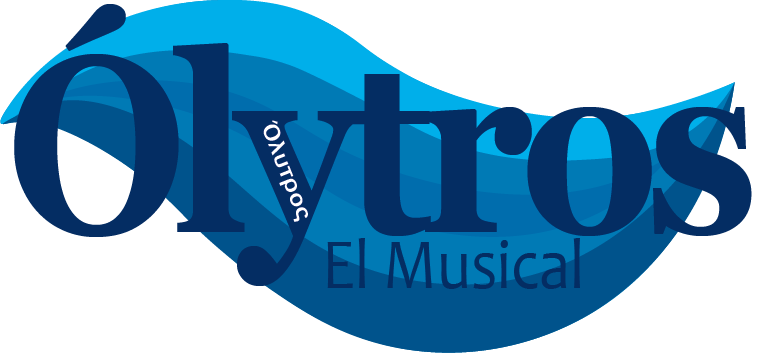
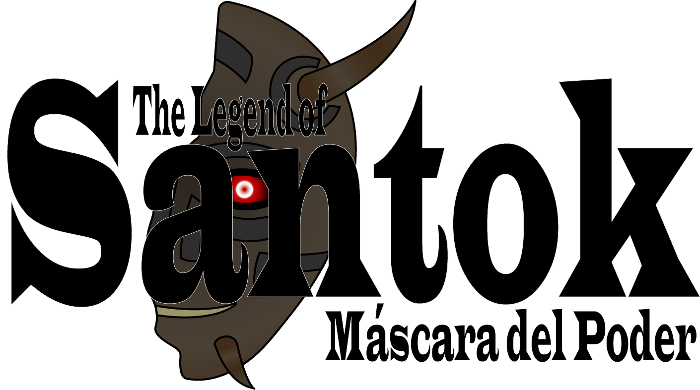

Página Principal
Proyectos Actuales
|  |
|
Ólytros: El MusicalÓlytros: El Musical cuenta la historia del mexicoamericano Leonardo Costas, quien quiere encontrar a su padre perdido y enfrenta tormentas, queda varado en tierras extranjeras y cae en sus propias trampas. En este viaje, sus dos amigos Dave Jones y Jane Evans lo acompañan. El padre de Leo a menudo le hablaba de las leyendas que rodean la antigua ciudad griega de Olytros, y desapareció mientras la buscaba. |
| Leer más... |
|  |
|
The Legend of Santok: Máscara de PoderThe Legend of Santok: Máscara de Poder narra la historia de Noro, un joven de 17 años de Tokio, quien es transportado al reino fantástico de Hyrule. Allí debe entrenar para derrotar a Tatsumi, el mago oscuro. |
| Leer más... |
|
Epic: The Musical - German EditionEpic: The Musical trata sobre el héroe de la antigua Grecia Odiseo y sus odiseas de regreso a casa tras la guerra de Troya. Epic consta de un total de 9 álbumes, que denominados sagas en el caso de Epic. Desde el 25 de diciembre de 2024, los álbumes conceptuales ingleses están álbumes conceptuales están completos. Lo que ocurrirá con la sincronización alemana está aún todavía. |
| Leer más... |